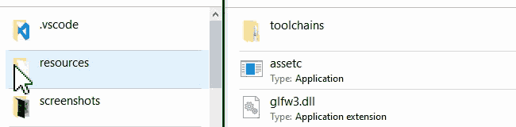

Compiling project resources into assets is done using the assetc command-line tool.
Upon invocation, it will scan the input folder and compile all resources in a supported format to the output folder. Files in an unsupported format are copied unmodified to the output folder.
It is very important that you treat the compiled output folder as entirely disposable and only ever perform modifications in the input folder. Output assets will be different for each platform you compile to.
Again, do not ever work in the assets folder.
If you are unclear on the resources/assets distinction see Resources & Assets.
Drag & drop
The easiest way is to drag and drop the resources folder on the assetc executable:

Command-Line
Since HARFANG 3.2.5, assetc is now included in both Python and Lua versions.
Python
In HARFANG Python 3.2.5 and above, assetc is packaged into the bdist wheel and can be invoked as a function of harfang.bin module.
In this example, we will compile a folder called resources and target the OpenGL API:
-
From the command line:
bash python3 -m harfang.bin assetc resources -api GL -
As a Python module:
python import harfang.bin harfang.bin.assetc('resources', '-api', 'GL')
Lua
In HARFANG Lua 3.2.5 and above, assetc is packaged along with the Lua extension and can be invoked as a function of harfang.bin.
In this example, we will compile a folder called resources and target the OpenGL API:
hg_bin = require "harfang.bin"
hg_bin.assetc('resources', '-api', 'GL')
Usage in detail
If you need more control over the compilation options, the command line gets the following parameters:
assetc <input> [output PATH] [-daemon] [-platform PLATFORM] [-api API] [-defines DEFINES] [-job COUNT]
[-toolchain PATH] [-progress] [-log_to_std_out] [-debug] [-quiet] [-verbose]
| Option | Shortcut | Description |
|---|---|---|
-input |
Input project resources folder. | |
-output |
Output compiled assets folder. If unspecified, the input folder path suffixed with _compiled is used. |
|
-daemon |
-d |
Run the compiler in daemon mode. The compiler will constantly monitor the input folder and compile its content as it is modified. |
-platform |
-p |
Platform to target. |
-api |
Graphics API to target. Some platforms (eg. PC) might support multiple graphics API (DX11, DX12, GL, ...). | |
-defines |
-D |
Semicolon separated defines to pass to the shader compiler (eg. FLAG;VALUE=2). |
-job |
-j |
Maximum number of parallel job (0 - automatic). |
-toolchain |
-t |
Path to the toolchain folder. |
-progress |
Output progress to the standard output. | |
-log_to_std_out |
-l |
Log errors to the standard output. |
-debug |
Compile in debug mode (eg. output debug informations in shader). | |
-quiet |
-q |
Disable all build information but errors. |
-verbose |
-v |
Output additional information about the compilation process. |
Note: When run in daemon mode assetc will not exit after its initial run and will keep watching the input folder. When a resource is modified it will automatically be compiled to the output folder.
See Importing from GLTF and Importing from FBX to convert common 3d formats to Harfang resources.